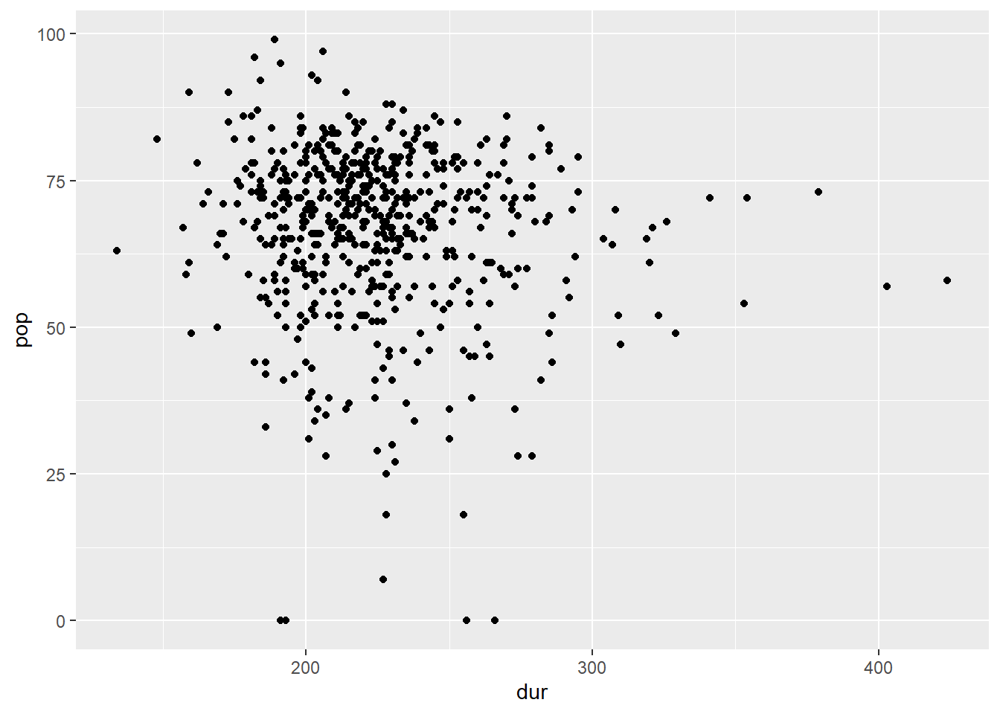
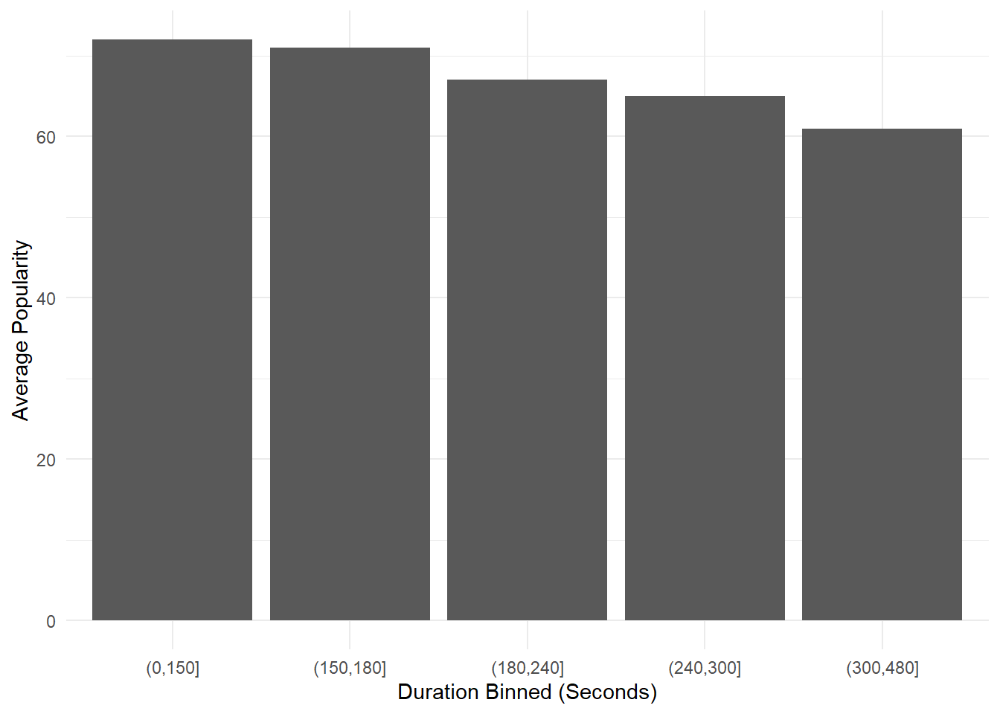
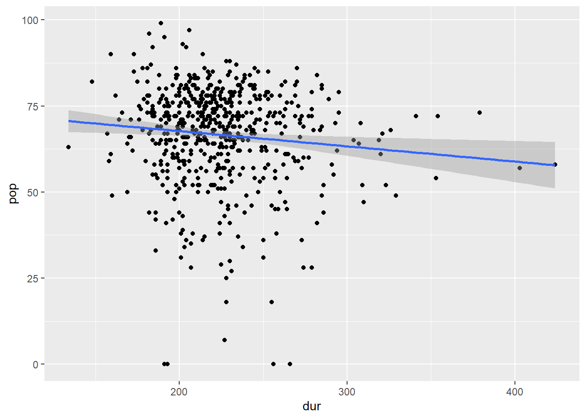
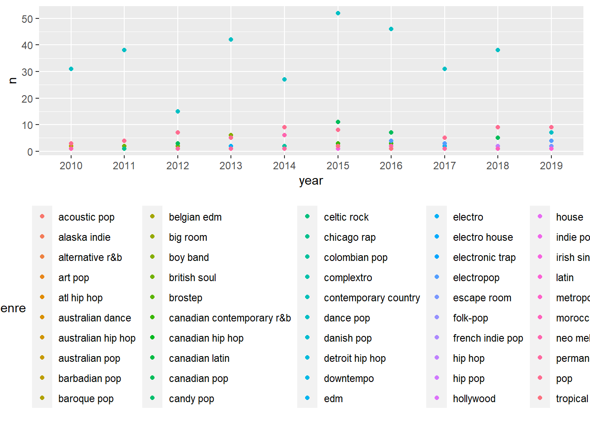
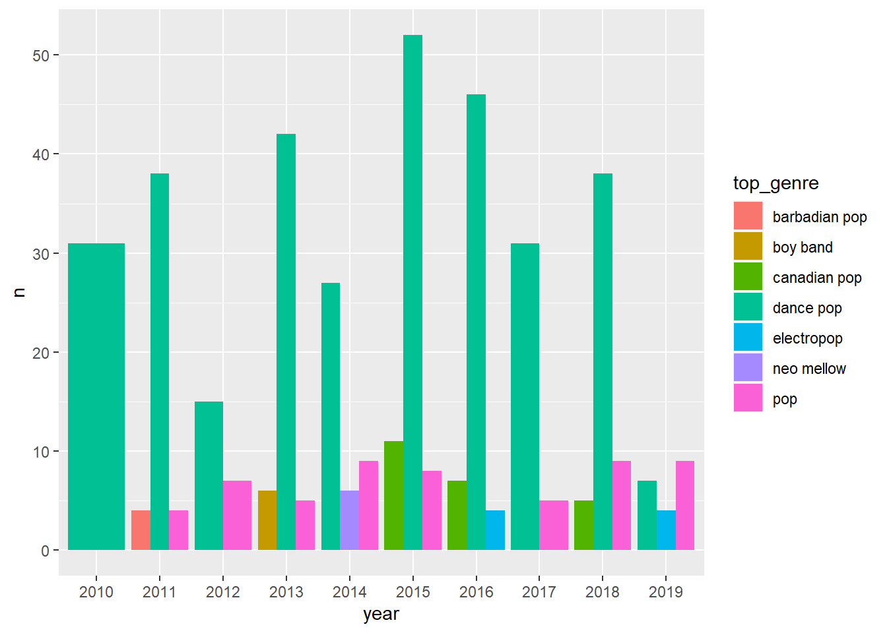
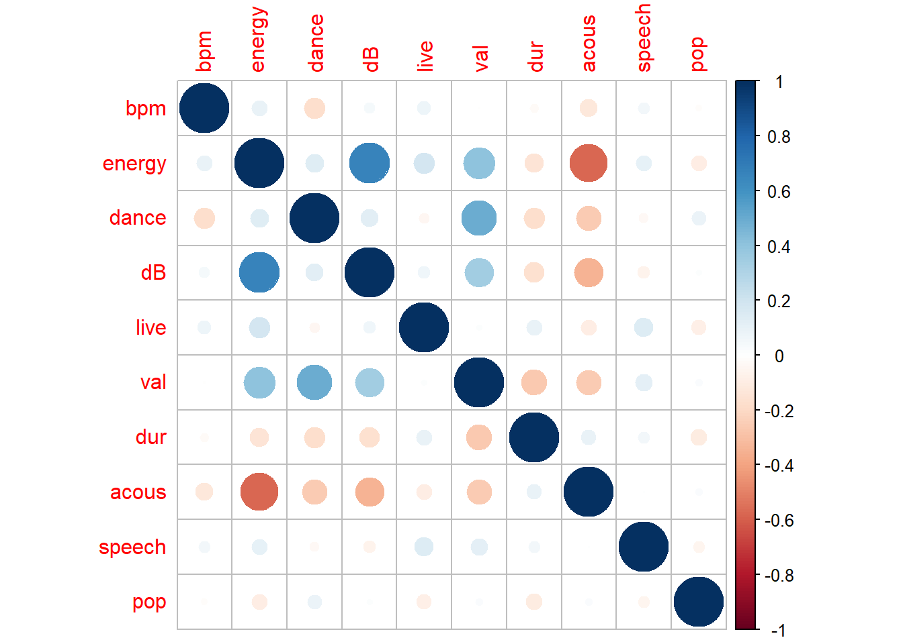

# A tibble: 6 × 15
...1 title artist `top genre` year bpm nrgy dnce dB live val dur
<dbl> <chr> <chr> <chr> <dbl> <dbl> <dbl> <dbl> <dbl> <dbl> <dbl> <dbl>
1 1 Hey,… Train neo mellow 2010 97 89 67 -4 8 80 217
2 2 Love… Eminem detroit hi… 2010 87 93 75 -5 52 64 263
3 3 TiK … Kesha dance pop 2010 120 84 76 -3 29 71 200
4 4 Bad … Lady … dance pop 2010 119 92 70 -4 8 71 295
5 5 Just… Bruno… pop 2010 109 84 64 -5 9 43 221
6 6 Baby Justi… canadian p… 2010 65 86 73 -5 11 54 214
# ℹ 3 more variables: acous <dbl>, spch <dbl>, pop <dbl>spotify
Aims
In this project we will be looking at a dataset comprised of multiple songs over a period of time gathered from Spotify. We don’t really have any specific aims, just that we want to do some data exploration and see if we can find anything interesting. The dataset was taken from http://organizeyourmusic.playlistmachinery.com/ which is an official site from Spotify.
Data overview
Lets take a look at the first five rows of our dataset
As you can see, there are a total of 15 columns. Some notable variables are there is …1 which appears to be an indexing column. We have the title, artist and respective genre of the song.
We also have a year variable, which could be an indication of multiple things. Its important to ask ourselves some questions about what it represents: Was it the year the song was produced? Was it the year this song was entered into this dataset based on some criteria? We’ll get back to answering this very soon.
We also have a bunch of other columns which appear to be abbreviations of other words. There are some obvious ones since their abbreviated versions are the more popular than their non-abbreviated counter-part (e.g. bpm stands for beats per minute). You can probably guess what nrgy, dnce, acous and spch represent.
However if we want to really dive deep into what each column represents, then we should take a look at the documentation (Hopefully it exists!). It’s always important to read the documentation as it provides useful insight from those who inputted or gathered the data (Thus its reasonable to expect them to know what the column that they created represents). Lets take a look at the documentation now!
So as you can see some of our uncertainties about what a column represents have been answered. For example year does in fact refer to the release year of the song, with some occasional caveats. Also note how a column named Added is being referred to in the documentation but does not exist in our dataset. This is because the site where this data is obtained from allows you to organize your own Spotify songs that you’ve saved. Naturally, as this is a general top 600 or so songs dataset, this column isn’t present. Now lets make sure everything was read in correctly.
str(raw_data)spc_tbl_ [603 × 15] (S3: spec_tbl_df/tbl_df/tbl/data.frame)
$ ...1 : num [1:603] 1 2 3 4 5 6 7 8 9 10 ...
$ title : chr [1:603] "Hey, Soul Sister" "Love The Way You Lie" "TiK ToK" "Bad Romance" ...
$ artist : chr [1:603] "Train" "Eminem" "Kesha" "Lady Gaga" ...
$ top genre: chr [1:603] "neo mellow" "detroit hip hop" "dance pop" "dance pop" ...
$ year : num [1:603] 2010 2010 2010 2010 2010 2010 2010 2010 2010 2010 ...
$ bpm : num [1:603] 97 87 120 119 109 65 120 148 93 126 ...
$ nrgy : num [1:603] 89 93 84 92 84 86 78 76 37 72 ...
$ dnce : num [1:603] 67 75 76 70 64 73 75 52 48 79 ...
$ dB : num [1:603] -4 -5 -3 -4 -5 -5 -4 -6 -8 -4 ...
$ live : num [1:603] 8 52 29 8 9 11 4 12 12 7 ...
$ val : num [1:603] 80 64 71 71 43 54 82 38 14 61 ...
$ dur : num [1:603] 217 263 200 295 221 214 203 225 216 235 ...
$ acous : num [1:603] 19 24 10 0 2 4 0 7 74 13 ...
$ spch : num [1:603] 4 23 14 4 4 14 9 4 3 4 ...
$ pop : num [1:603] 83 82 80 79 78 77 77 77 76 73 ...
- attr(*, "spec")=
.. cols(
.. ...1 = col_double(),
.. title = col_character(),
.. artist = col_character(),
.. `top genre` = col_character(),
.. year = col_double(),
.. bpm = col_double(),
.. nrgy = col_double(),
.. dnce = col_double(),
.. dB = col_double(),
.. live = col_double(),
.. val = col_double(),
.. dur = col_double(),
.. acous = col_double(),
.. spch = col_double(),
.. pop = col_double()
.. )
- attr(*, "problems")=<externalptr> Everything seems to be in order here. We may want to change the year to a Date as we don’t want to perform calculations on it. Lets move on to checking for missing values or values that appear to be mistakes.
raw_data |>
summarize(across(everything(), function(x) sum(is.na(x))))# A tibble: 1 × 15
...1 title artist `top genre` year bpm nrgy dnce dB live val dur
<int> <int> <int> <int> <int> <int> <int> <int> <int> <int> <int> <int>
1 0 0 0 0 0 0 0 0 0 0 0 0
# ℹ 3 more variables: acous <int>, spch <int>, pop <int>There are no missing values. Lets look for values that were incorrectly inserted. Generally we can use the View() function to have a quick look at what the largest and smallest values are for certain columns. For example nrgy, dnce, live etc. seem to be only be able to take values in the range 0-100. dB takes only negative values, and bpm and dur are positive values which can go much higher than 100.
raw_data |>
filter(if_any(c(nrgy, dnce, live, val, acous, spch, pop), ~ . <= 1 | . >= 99))# A tibble: 150 × 15
...1 title artist `top genre` year bpm nrgy dnce dB live val
<dbl> <chr> <chr> <chr> <dbl> <dbl> <dbl> <dbl> <dbl> <dbl> <dbl>
1 4 Bad Roman… Lady … dance pop 2010 119 92 70 -4 8 71
2 7 Dynamite Taio … dance pop 2010 120 78 75 -4 4 82
3 14 Telephone Lady … dance pop 2010 122 83 83 -6 11 71
4 15 Like A G6 Far E… dance pop 2010 125 84 44 -8 12 78
5 19 Alejandro Lady … dance pop 2010 99 80 63 -7 36 37
6 20 Your Love… Kesha dance pop 2010 120 61 83 -4 9 76
7 21 Meet Me H… The B… dance pop 2010 130 63 80 -7 32 40
8 22 Whataya W… Adam … australian… 2010 186 68 44 -5 6 45
9 23 Take It O… Kesha dance pop 2010 125 68 73 -5 9 74
10 24 Misery Maroo… pop 2010 103 81 70 -5 22 73
# ℹ 140 more rows
# ℹ 4 more variables: dur <dbl>, acous <dbl>, spch <dbl>, pop <dbl># This doesn't really filter anything down for us, due to the acous column (Some songs may not be using acoustic sounds)
raw_data |>
filter(if_any(c(nrgy, dnce, live, val, spch, pop), ~ . <= 1 | . >= 99))# A tibble: 6 × 15
...1 title artist `top genre` year bpm nrgy dnce dB live val dur
<dbl> <chr> <chr> <chr> <dbl> <dbl> <dbl> <dbl> <dbl> <dbl> <dbl> <dbl>
1 51 Hello Marti… big room 2010 128 98 67 -3 10 45 191
2 139 Blow… P!nk dance pop 2012 114 92 60 -3 25 75 256
3 268 Not … Justi… dance pop 2014 86 73 59 -6 38 46 266
4 363 L.A.… Fergie dance pop 2015 202 39 48 -8 26 27 193
5 443 Mill… Adele british so… 2016 0 0 0 -60 0 0 227
6 573 Memo… Maroo… pop 2019 91 32 76 -7 8 57 189
# ℹ 3 more variables: acous <dbl>, spch <dbl>, pop <dbl>We can see a glaringly obvious incorrect entry. Million Years Ago by Adele apparently has no bpm, energy, danceability, etc. while also having a dB value of -60 (Significantly lower than any other song). Just to make sure we can go ahead and listen to the song on Spotify. The song starts with some vocals so a spch value of 0 makes zero sense! We can definitely go ahead and remove this in the next section
Data Cleaning
Lets quickly get rid of the index column as its redundant, remove the incorrect row of data we saw previously, change year to a character format since we won’t be doing math on it, and I’m going to format the column titles so that they follow general R column formatting (Such as replacing whitespace with underscores).
data <- raw_data |>
select(-`...1`) |>
filter(title != "Million Years Ago") |>
mutate(year = as.character(year)) |>
rename(
top_genre = `top genre`,
energy = nrgy,
dance = dnce,
speech = spch
)Lets get to exploring our data
Exploratory Data Analysis
What should we look at? We have many different options here and you may well want to explore something else than what I will. When brainstorming I came up with 3 questions we may want to look at:
Does the duration of a song impact its popularity?
What are the most popular genres of song for each year?
Which variables are most closely correlated? For example, Is BPM related to Danceability and the Energy of a song as you might expect?
Question 1
data |>
ggplot(aes(x = dur, y = pop)) +
geom_point()
# There doesn't appear to be much correlation between the two. Let's create a bar plot where duration and popularity are both binned for a different perspective.
dbreaks = c(0, 150, 180, 240, 300, 480)
pbreaks = c(100, 80, 60, 40, 20, 0)
data |>
group_by(dur_bin = cut(dur, dbreaks)) |>
mutate(
avg_pop = round(mean(pop)),
n = n()
) |>
ggplot(aes(x = dur_bin, y = avg_pop)) +
geom_bar(stat = "identity", position = "dodge") +
labs(x = "Duration Binned (Seconds)", y = "Average Popularity") +
theme_minimal()
# We can maybe see some sort of correlation here. The longer a song is the less popular it is. Lets expand on our first graph to include a regression line through our points.
data |>
ggplot(aes(x = dur, y = pop)) +
geom_point() +
geom_smooth(method = "lm")`geom_smooth()` using formula = 'y ~ x'
# Here we can see some potential negative correlation between duration and popularity. Finally lets look at a linear model using `lm`
pop_dur_lmodel <- lm(pop ~ dur, data = data)
summary(pop_dur_lmodel)
Call:
lm(formula = pop ~ dur, data = data)
Residuals:
Min 1Q Median 3Q Max
-68.119 -6.860 2.534 9.614 30.793
Coefficients:
Estimate Std. Error t value Pr(>|t|)
(Intercept) 76.55534 3.85503 19.859 < 2e-16 ***
dur -0.04417 0.01696 -2.604 0.00945 **
---
Signif. codes: 0 '***' 0.001 '**' 0.01 '*' 0.05 '.' 0.1 ' ' 1
Residual standard error: 14.21 on 600 degrees of freedom
Multiple R-squared: 0.01117, Adjusted R-squared: 0.009526
F-statistic: 6.78 on 1 and 600 DF, p-value: 0.009446# So for every unit increase in duration (e.g. an additional second) we can expect popularity to fall by 0.044 on average (3 d.p.). This is statistically significant to a strong degree (The probability that the results we've seen are due to chance are less than 1%)
correlation_value <- round(cor(data$pop, data$dur), 4)
print(paste("Correlation coefficient:", correlation_value))[1] "Correlation coefficient: -0.1057"# However, we can see that this is a very negligible negative correlationOverall we should consider a variety of things. We’ve seen that our results from the linear model are statistically significant, however based off the correlation value -0.1057, are our results practically significant given such a low value?
I would argue that they are. While shorter songs are only slightly more popular than longer ones, this will still be an important factor for labels to consider. The music industry is a multi-billion one after all, so any increase in popularity of a song will lead to a big increase in revenue. So to answer our initial question, “Does the duration of a song impact its popularity?” - Yes, both statistically speaking and in practical terms.
Question 2
ytg_pop_data <- data |>
group_by(year, top_genre) |>
summarize(
avg_pop = mean(pop),
n = n(),
.groups = "drop"
) |>
relocate(year, top_genre, avg_pop, n)
ytg_pop_data# A tibble: 147 × 4
year top_genre avg_pop n
<chr> <chr> <dbl> <int>
1 2010 art pop 58 1
2 2010 atl hip hop 57.7 3
3 2010 australian pop 62.5 2
4 2010 barbadian pop 65 2
5 2010 big room 0 1
6 2010 canadian pop 77 1
7 2010 colombian pop 56 1
8 2010 dance pop 65.1 31
9 2010 detroit hip hop 82 1
10 2010 hip pop 65 3
# ℹ 137 more rowsLooking over this table presents some interesting questions. Firstly, what do we really mean by “most popular genres of song for each year”? We could consider two angles:
- Should we define “popular” genres by how high they are based off the
popvariable? - Or should we define popularity by how many songs of a particular genre appear in our data? (i.e. how high the
nvalue is)
Lets say we consider angle #1. Then “neo mellow” would be considered the most “popular” genre due to its avg_pop score of 83. But this only appears a single time in our list so that seems a little misleading considering that while “dance pop” only has an avg_pop score of 65.0645161, it appears a total of 31 times which in my eyes indicates that "dance pop" is a much more popular genre in 2010. I say we should consider angle #2.
However there is now another question we should ask before continuing. Should we merge similar genres? For example should “detroit hip hop” and “hip hop” be considered into the same genre for the sake of our analysis? It would be useful as there are a lot of genres with a very low count but if you were to pool all the similar genres together this count would be bigger. I think that we shouldn’t, but this is really down to personal opinion if you think certain genres sound very similar in sound. However… consider the below plot
ytg_pop_data |>
ggplot(aes(x = year, y = n, colour = top_genre)) +
geom_point() +
theme(legend.position = "bottom")
We can see that our refusal to merge similar genres together makes our legend an absolute mess. It’s really hard to distinguish between more than 7 or so colours i.e. 7 or so genres. Despite this mess, it seems like there is a genre that really stands out in terms of popularity. Maybe we could merge similar genres together, choose a different way of representing this data or remove genres with a low amount of entries for each year. Let’s try the latter approach
ytg_pop_data |>
filter(n >= 4) |> # Drop genres that dont appear at least 4 times
ggplot(aes(x = year, y = n, fill = top_genre)) +
geom_bar(stat = "identity",
position = "dodge")
This is much nicer. We can see that “dance pop” dominates pretty much every year except 2019, but regardless “pop” is still the most dominant genre. In fact the majority of these entries are related to “pop” apart from “boy band” which makes a short appearance in 2013 (One Direction anyone…?) and “neo mellow” which again makes a short appearance in 2014. Some years may only have two or even one entry due to the rest of the genres not being popular enough.
To wrap up question 2, there is a multitude of different approaches you can take to answer the question more effectively. However it appears that it’ll be a case of redundancy, as its glaringly evident that “dance pop” is the dominant genre for each year, expect in 2019 in which “pop” is the most popular overall.
Question 3
Lets take a look at the correlation values between all our numeric variables of interest
corr_data <- data |>
select(where(is.numeric)) # Select only numeric columns
corr_matrix <- cor(corr_data)
corrplot(corr_matrix)
We can see some interesting relationships here.
For each unit increase in decibel levels, the “energy” of the song increases by one point. (Note that the decibel values range from -2:-15. A more negative value represents a quieter sound while a higher negative value represents a louder sound. The reason for this is because the decibel levels are being recorded on a logarithmic scale). So there is a relatively strong correlation that the louder a song is the more energetic it is. Similarly there is a small positive correlation between “loudness” of a song and its valence (i.e. the positive mood of a song) as well as a small negative correlation with the song’s “acousticness”.
These all seem relatively expected so far, although bpm doesn’t have any strong correlations with any other variables to my surprise. Some other things are a positive relationship between energy and valence, strong negative correlation between energy and acousticness. Also, the more danceable a song is the higher its valence.
Overall we see an interesting picture. Generally speaking, the louder a song is, the more positive it is in terms of mood, and there is much less acoustiness. The song is also likely to be considered more danceable due to valence’s relationship toward danceability. The rest of these correlations don’t seem to be very strong.